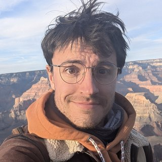
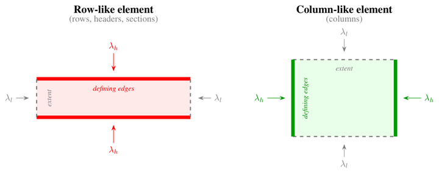
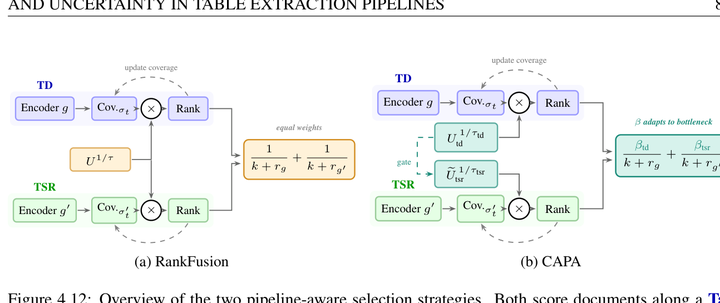
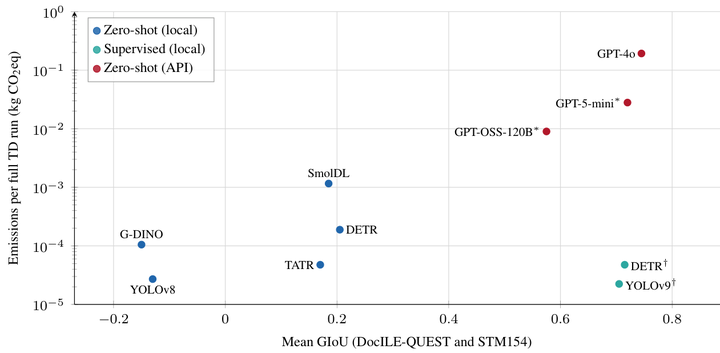
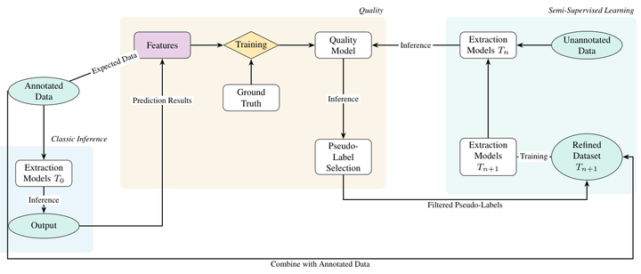
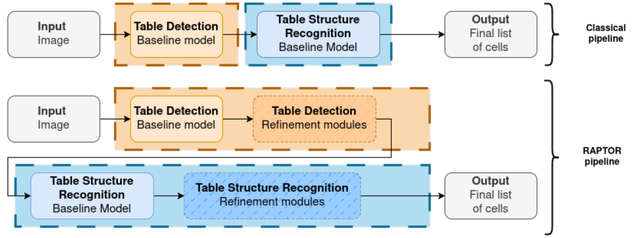
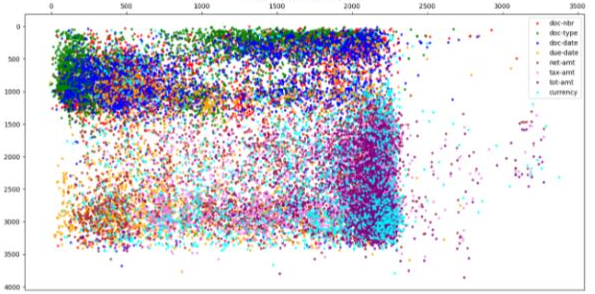
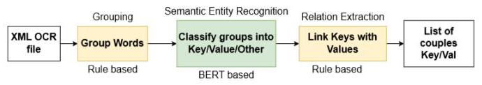

Hello, I'm Eliott Thomas
I am a final-year PhD candidate in Document AI at the L3i lab, La Rochelle University, and I work at Yooz, where my thesis runs as a CIFRE. I defend in December 2026.
My thesis, Label-Efficient Deep Learning for Reliable Table Extraction in Business Documents, is supervised by Mickaël Coustaty at L3i, with Aurélie Joseph and Vincent Poulain d'Andecy at Yooz, and directed by Jean-Marc Ogier. Several of my methods now run in production at Yooz. Before that, I was a research engineer at Labcom IDEAS (L3i and Yooz).
My research interests are semi-supervised and active learning, uncertainty estimation, vision-language models, and document understanding.
News
- December 2026PhD defense at La Rochelle University.
- 2026Two papers at ICDAR 2026: ConRTF, and active learning for cascaded table extraction pipelines.
- 2026Reviewer for ICDAR 2026, main conference and DAS workshop.
- March 2026Presented our zero-shot table extraction benchmark at WACV 2026.
- 2025QUEST, quality-aware semi-supervised table extraction, at ICDAR 2025.
- 2025RAPTOR at the WACV 2025 VisionDocs workshop.
Publications
-

International Conference on Document Analysis and Recognition (ICDAR 2026) · *equal contribution
A training loss that encodes table geometry: rows are supervised on their horizontal boundaries, columns on their vertical ones, inside a real-time D-FINE detector.
-

International Conference on Document Analysis and Recognition (ICDAR 2026)
The first adaptation of Uncertainty Herding to cascaded detection pipelines, with two pipeline-aware extensions that exploit the dependency between table detection and structure recognition.
-

IEEE/CVF Winter Conference on Applications of Computer Vision (WACV 2026)
Zero-shot vision-language models against supervised detectors for table detection and structure recognition, with an automated error taxonomy and an emissions analysis.
-

QUEST: Quality-aware Semi-supervised Table Extraction for Business Documents
International Conference on Document Analysis and Recognition (ICDAR 2025)
Semi-supervised table extraction that selects pseudo-labels with a quality model trained to predict F1, instead of relying on confidence scores.
-

RAPTOR: Refined Approach for Product Table Object Recognition
WACV 2025 Workshops, VisionDocs
A modular post-processing system that fixes recurrent table detection and structure errors of DETR-based models, with its parameters tuned by a genetic algorithm.
-

SETI: Subgraph-Induced Extraction Technique for Information from Administrative Documents
International Conference on Document Analysis and Recognition (ICDAR 2023)
Information extraction from administrative documents with graph attention networks over document sub-graphs.
-

Extracting Key-Value Pairs in Business Documents
ICDAR 2023 Workshops
A pipeline that combines business rules with a pretrained multilingual transformer to extract key-value pairs from invoices, from OCR to output.
Full list on Google Scholar.